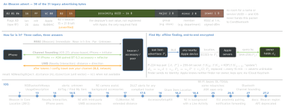

ble · folio
In one line: Apple’s proximity features are different frameworks on one radio: an iBeacon is a BLE advert only Core Location sees; AccessorySetupKit (iOS 18) pairs one accessory without the Bluetooth prompt and now gates Channel Sounding (27) and some background relaunches (26); Nearby Interaction measures over UWB; Find My relays locations encrypted to rotating keys. A plain BLE GATT accessory needs no MFi.
Download PDF Print view LaTeX source


Which framework, what it needs
| job | framework (iOS) | gate |
|---|---|---|
| GATT, scan, advertise | CoreBluetooth | NSBluetoothAlwaysUsageDescription (13; older targets also …PeripheralUsageDescription); modes bluetooth-central / -peripheral |
| see a beacon | Core Location | location authorisation (the same prompt as GPS) |
| be a beacon | CLBeaconRegion data, CBPeripheralManager | app frontmost, screen on, unlocked; withMeasuredPower: nil = device default |
| set up an accessory | AccessorySetupKit (18) | Info.plist declarations; no Bluetooth prompt |
| distance + direction | NearbyInteraction (14) | NSNearbyInteractionUsageDescription; UWB on both ends (or Channel Sounding, 27); your own token channel |
| distance, no UWB | CoreBluetooth Channel Sounding (27) | N1 iPhone; ASK-paired, connected BT 6.3 accessory |
| lost-item relay | Find My network | MFi Program; Apple’s accessory specification |
| MFi link | ExternalAccessory | MFi; Lightning, 30-pin or Bluetooth; UISupportedExternalAccessoryProtocols |
| P2P Wi-Fi | Wi-Fi Aware (26) | com.apple.developer.wifi-aware; WiFiAwareServices; pair via ASK or DeviceDiscoveryUI |
iBeacon
- Monitoring (enter / exit, passive, cheap) relaunches a terminated app (location authorisation + the
locationbackground mode, per the docs);CLLocationManagercaps it at 20 regions per app, shared by all its managers; the same identifier replaces a region; timely events need network connectivity.CLMonitor(17): an actor; conditions persist across launches;eventsis an async sequence; one open instance per name — re-create it after a relaunch. An event = state (satisfied / unsatisfied / unknown) + date; a wildcard match reports the seen major / minor as its refinement. - Ranging: frequent RSSI →
proximity+accuracy(m), for a frontmost app, “not expected in the background”. Immediate = held up to it; Far = seen, confidence too low for Near — not “far away”; Unknown = too few samples yet. Beacons arrive sorted by best-guess proximity, and the guess can be wrong. - Calibrate every installed beacon: measured power = mean
rssiat 1 m over ≥10 s, sweeping a 30 cm line. Bodies, water and metal attenuate 2.4 GHz; range is tens of metres (geofences ∼100 m minimum); room-level at best. - UUIDs can be sniffed by anyone. Building iBeacon hardware takes Apple’s licence (the spec comes with it). Docs, Oct 2026:
CLBeaconRegion,CLBeaconIdentityConstraint,startMonitoring(for:)deprecated in 27.2 →CLMonitor+CLBeaconIdentityCondition.
CoreBluetooth on iOS · the accessory side
- An app advertises only a local name + service UUIDs: 28 B, plus 10 B of scan response for the name; best effort. In the background: no name, every UUID in the overflow area — seen only by iOS devices scanning for it.
- Relaunch (TN3115) only while waiting on a Bluetooth event that then happens. Yes: evicted, crashed, restarted (after first unlock), Control Center toggle, Airplane Mode if it switches Bluetooth. No: force quit, Bluetooth off in Settings. iOS 26: the force-quit, Control Center and Airplane Mode cases relaunch only apps that set the accessory up with ASK.
- Accessory advertising: 20 ms for ≥30 s, then exactly one of 152.5 · 211.25 · 318.75 · 417.5 · 546.25 · 760 · 852.5 · 1022.5 · 1285 ms (QA1931).
- Connection parameters (ADG, quoted by Apple, 2025): min ≥15 ms, a multiple of 15, ≤2 s; max ≥ min + 15 ms (or both 15); latency ≤30; max × (latency+1) ≤6 s; supervision timeout 6–18 s and > 3 × max × (latency+1). QA1931 (2017) still says 2–6 s and ≤2 s.
AccessorySetupKit (iOS 18)
ASAccessorySession.showPicker(for:)withASPickerDisplayItem(name, 180×120 pt image,ASDiscoveryDescriptor: service UUID or company id + name substring, data blob + mask, SSID or prefix, range.immediate; Wi-Fi Aware service, 26). One picker at a time.- The system scans and draws the picker →
ASAccessory(bluetoothIdentifier→CBPeripheral,ssid). No Bluetooth or Wi-Fi prompt; a scan returns only the app’s accessories;poweredOnonly once one is paired. - Info.plist
NSAccessorySetupKitSupports+NSAccessorySetupBluetooth{Services, CompanyIdentifiers, Names}: discovering anything undeclared crashes. Users rename and remove in Settings › Privacy & Security › Accessories. Old pairings:ASMigrationDisplayItem, noCBCentralManageruntil done. watchOS 26: the companion watch app may use CoreBluetooth with it, behind its own prompt.
Nearby Interaction · Channel Sounding
| configuration | other end | bootstrap |
|---|---|---|
NINearbyPeerConfiguration (peerToken:) | iPhone, Watch | NIDiscoveryToken sent over your channel |
NINearbyAccessoryConfiguration(data:) | UWB accessory (15) | config data per Apple’s NI accessory protocol |
…(accessoryData:bluetoothPeerIdentifier:) | BLE-paired UWB accessory (16) | NI GATT service; allows background |
…(bluetoothChannelSoundingIdentifier:…) | BT 6.3 accessory (27) | ASK-paired only |
NIDLTDOAConfiguration | DL-TDOA anchors (26) | supportsDLTDOAMeasurement |
deviceCapabilities(16, replacesisSupported): distance, direction, camera assistance, extended distance (17), DL-TDOA (26), Channel Sounding (27). UWB: iPhone 11 on, not 16e; second-gen chip in iPhone 15 on (not 16e / 17e) and AirTag 2nd gen; barred or limited in some countries. Watch: distance only.- Camera assistance (16): ARKit adds
horizontalAngle+verticalDirectionEstimateonce the phone has been swept enough. - A peer that quits or leaves UWB range times out →
session(_:didRemove:reason:); a bad token →invalidConfiguration; a declined prompt →userDidNotAllow. - Background suspends the session, unless the peer is BLE-paired and connected (the accessory acts; the app gets no callbacks) or a Live Activity starts as the app leaves (18.4); 27.2 docs: DL-TDOA may start on a background relaunch.
- Channel Sounding (27):
supportsFeatures(.channelSounding)→peripheral.startChannelSoundingSession(role.initiator) →CBChannelSoundingProcedureResults.distance; direction through NI + camera. Accessory: Core 6.3 inline PCT, modes 0 + 2, TFCS ≥100 µs. Foreground only; iOS drops outliers and may sample less under radio load. A Core 6.0 feature; 6.3 shipped May 2026.
Find My, MFi, EU
- Alerts for an unknown AirTag / Find My item moving with you: 14.5; for any tracker built to DULT (Apple + Google, IETF working group): 17.5 and Android 6.0+. Share Item Location (18.2): an authenticated link for an airline or anyone, gone after 7 days.
- Of these APIs only ExternalAccessory and Find My need MFi; a BLE GATT peripheral needs none.
- EU, 26.5: proximity-triggered pairing (system prompt, then the app finishes in the ASK flow; organisation account, self-certification, companion app) and
AccessoryNotifications(notifications to a wearable; EU devices + EU accounts only).